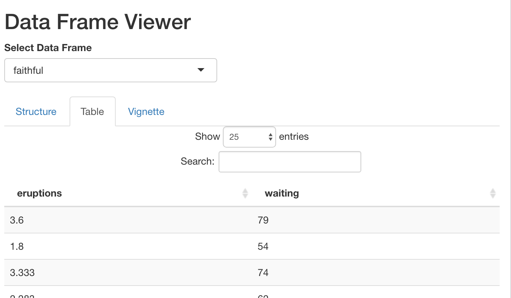

Shiny applications have
become a very popular and powerful way of creating interactive we
applications that leverage the power of R. There are numerous ways Shiny
apps can be deployed including ShinyApps.io or hosted services such
as DigitalOcean or Amazon AWS. The Golem project provides a
framework for developing Shiny apps as R packages. However, with Golem,
the Shiny app is the primary product. This package provides a framework
for including Shiny apps where the app is designed to demonstrate the
features of the package. That is, it is more like the role R package
demos had before they were obfuscated by package vignettes and tests
(via the usethis
package. The primary function used by package users is
shiny_demo. Much like the built in demo()
function, calling shiny_demo() without any parameters will
list available Shiny demo apps in all the loaded packages. Calling
shiny_demo(topic) will launch the Shiny app. In addition to
providing a standardized structure for including Shiny demo apps within
your package, it also provides functionality to allow the package user
to pass parameters to the Shiny app.
For the package developer, Shiny demo apps need to be placed in the
inst/ folder. The ShinyDemo::shiny_demo()
function will automatically find apps located there. The files placed in
this file are the same as building a standalone Shiny app (i.e. you can
use the globa.R, shiny.R, and
ui.R files or the single app.R file).
Supporting files should also be placed here (e.g. www/,
R/, etc.). Consider the following Shiny app that displays
information about data frames.
The ui.R file:
fluidPage(
titlePanel("Data Frame Viewer"),
uiOutput('df_select'),
tabsetPanel(
tabPanel(
'Structure',
verbatimTextOutput('df_structure')
),
tabPanel(
'Table',
dataTableOutput('df_table')
)
)
)The server.R file:
function(input, output, session) {
get_data <- reactive({
req(input$dataframe)
df <- NULL
if(exists(input$dataframe)) {
df <- get(input$dataframe)
}
return(df)
})
output$df_select <- renderUI({
ls_out <- ShinyDemo::ls_all()
dfs <- character()
for(i in ls_out) {
if(is.data.frame(get(i))) {
dfs <- c(dfs, i)
}
}
if(length(dfs) > 0) {
selectInput('dataframe', 'Select Data Frame', choices = dfs)
} else {
p('No data.frames found!')
}
})
output$df_structure <- renderPrint({
df <- get_data()
str(df)
})
output$df_table <- renderDataTable({
df <- get_data()
return(df)
})
}This application will run as is but very likely will not list any
data frames to view (assuming run from a fresh R session). If you want
to provide data frame to view to the end user, you could load the data
frame in global.R, for example. The ls_all()
function work like ls(), except it will traverse the
environment chain up to .GlobalEnv. This Shiny app is
included in the ShinyDemo package and can be launched using
the follow command:
shiny_demo('df_viewer', 'ShinyDemo')Passing parameters to Shiny applications
A is this application is not very useful. However, we can modify the
server function to use the
ShinyDemo::get_shiny_parameters() function in order to find
objects that can be passed to the application. As shown below, we need
to have a list object called data_frames that
contains data frames the application will display. The
type_check parameter is optional, but is called if the
object is found to determine if it of the correct type.
df_viewer_server <- function(input, output, session) {
get_data_frames <- reactive({
get_shiny_parameter(param = 'data_frames', type_check = is.list)
})
get_data <- shiny::reactive({
shiny::req(input$dataframe)
data_frames <- get_data_frames()
df <- NULL
if(input$dataframe %in% names(data_frames)) {
df <- data_frames[[input$dataframe]]
}
return(df)
})
output$df_select <- shiny::renderUI({
data_frames <- get_data_frames()
shiny::selectInput('dataframe', 'Select Data Frame', choices = names(data_frames))
})
output$df_structure <- shiny::renderPrint({
df <- get_data()
str(df)
})
output$df_table <- DT::renderDT({
df <- get_data()
return(df)
})
}The ShinyDemo::runAppWithParams is essentially a wrapper
to shiny::runApp() but allows for passing arbitrary
parameters to the Shiny application. Note that any
shiny::runApp() or shiny::shinyApp()
parmaeters can be specified here (we set the port for
example).
runAppWithParams(
ui = ShinyDemo::df_viewer_ui,
server = ShinyDemo::df_viewer_server,
data_frames = list(mtcars = mtcars, faithful = faithful),
port = 2112)
If you wish to run your Shiny application from an app.R
script as well as being in the package, there is slight modification
that you need to make. When you define your UI and server code with
app.R (or ui.R and server.R),
they are defined in the global environment. When we place these
functions inside a package they will be run from within the package
environment. Therefore anything we define out side the functions (or in
global.R) will not be accessible. However, we can modify
the environment the functions will run as shown below.
library(shiny)
library(ShinyDemo)
data("mtcars")
data("faithful")
data_frames <- list(mtcars = mtcars,
faithful = faithful)
ui <- ShinyDemo::df_viewer_ui
environment(ui) <- environment()
server <- ShinyDemo::df_viewer_server
environment(server) <- environment()
shinyApp(ui = ui, server = server)Utility Functions
The ShinyDemo has a few utility functions.
ls_all()
The ls_all() function works like ls() in
that it returns a character vector listing the names of objects
available, however ls_all() will traverse the environment
chain until it reaches the .GlobalEnv.
renderRmd
This will render an R markdown file from a Shiny application. If the
input parameter is provided it will be available within the
R markdown file at render time.
includeVignette
This works like includeMarkdown except it will include
an HTML vignette within the Shiny app.
renderVignette
Similar to includeVignette except the source R markdown
for the vignette will be rendered instead of using the prebuilt vignette
from the package directory. This avoids some potential formatting issues
of includeVignette since it will render the document as a
partial HTML file (i.e. the <head></head>
content will be excluded).